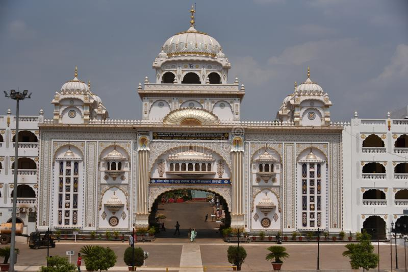
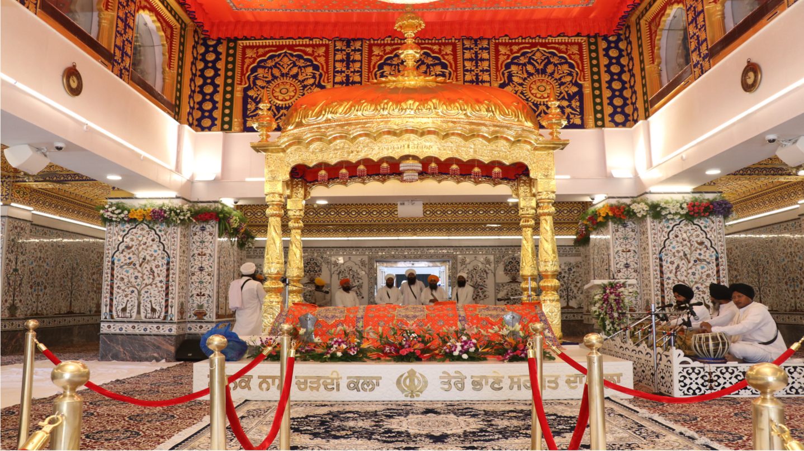
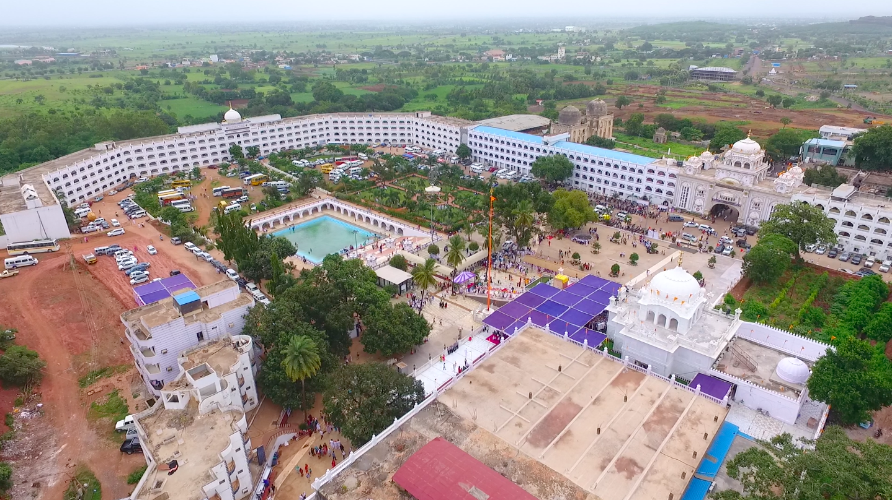
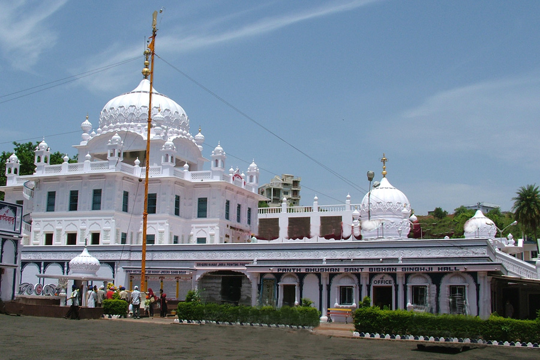
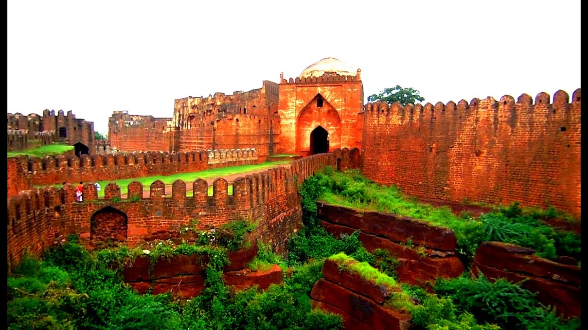
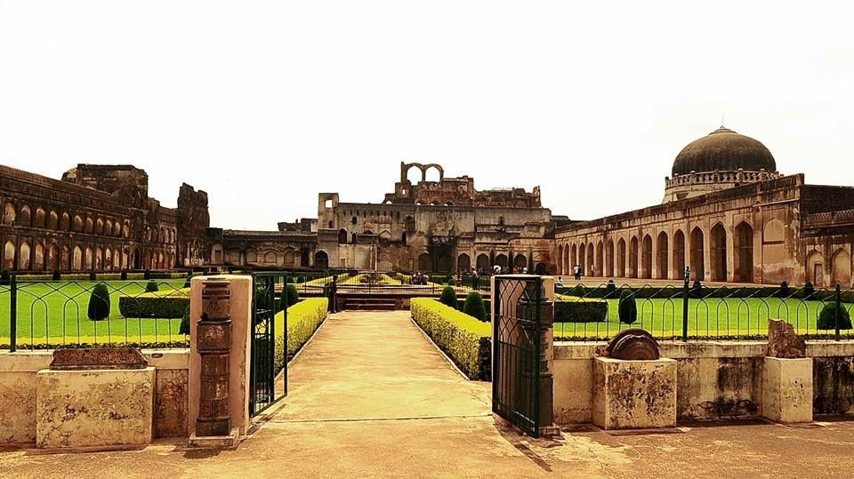
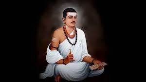
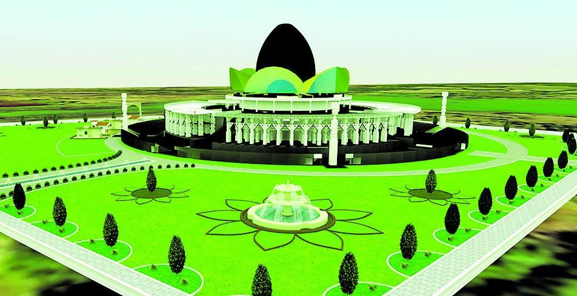
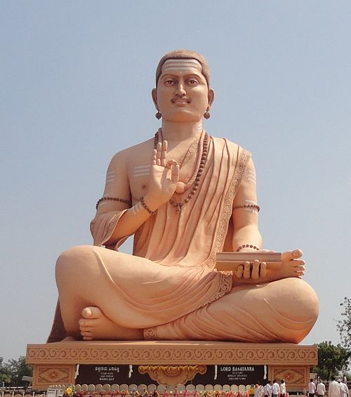

As and when this world is infested with sins, injustice, tyranny, cruelty and evil, God Almighty has sent some pious soul to this world to destroy the above forces, so that righteousness and truth may prevail. In other words, God himself takes birth in the form of some Saintly person. It is believed that Guru Nanak Devji Maharaj, the first Guru of the Sikhs was the incarnation of God. Before his birth all kinds of above evil forces were rampant in India.
The situation in Punjab was even worse in those days. There was no sense of unity amongst Punjabis then. The invaders used to rock the country by looting, robbing, abducting girls and taking away the booty. At such a dark period, Guru Nanak Devji Maharaj appeared in this burning globe to preach love, equality, harmony, righteousness, service to humanity and truth.
Guru Nanak was born on Kartik Purnima 1526 Bikrami (i.e. 1469 A.D) at Talwandi Rai Bhoe, now known as Sri Nankana Saheb (now in Pakistan ) to Sri Mehta Kalu, a revenue Accountant, & Mata Triptaji.



The Bidar Fort was built by Ahmad Shah Wali Bahman who belongs to Bahman dynasty in 1427 AD. It was an unique construction with double lines of defensive fortifications. The local intended that the old fort was located in the western portion of the present day fort. The beauty of the fort had written in the book Tarikh-i-Firishta. This book was written by the famousPersian scholar Firishta during the period of 1560 CE TO 1620 CE. At first the the Prince Ulugh Khan who belonged to the Tughlaq dynasty captured in 1321 and later he became the Sultan Muhammad Bin Tughluq of Delhi.



Anubhava Mantapa, established by Basavanna in the 12th Century C.E. is located in Basavakalyan in Bidar district of Karnataka. It is the first religious parliament in the world whose literal meaning is "experience pavilion", and was an academy of mystics, saints and philosophers of the lingayat faith in the 12th century. It was the fountainhead of all religious and philosophical thought pertaining to the lingayat. It was presided over by the mystic Allama Prabhu and numerous Sharanas from all over Karnataka and other parts of India were participants. This institution was also the fountainhead of the Vachana literature which was used as the vector to propagate Veerashaiva religious and philosophical thought. Other giants of veerashaiva theosophy like Akka Mahadevi, Channabasavanna and Basavanna himself were participants in the Anubhava Mantapa. The Anubhava Mantapa also called as the Mahaamane.